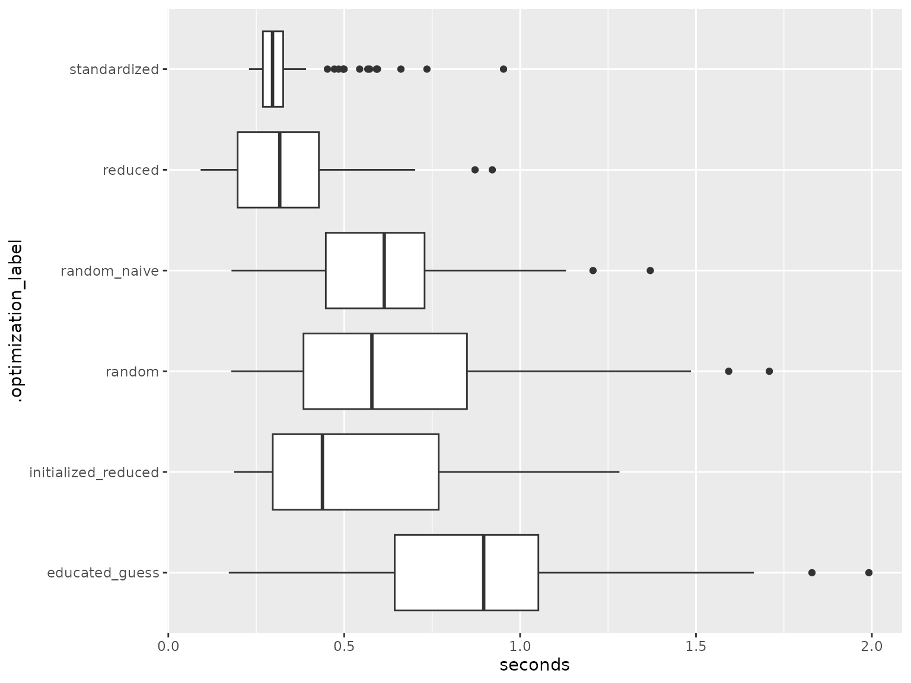

HMMs are statistical models used to explain systems that can only be observed indirectly through a sequence of outputs, and have unobservable hidden states. They consist of two processes,
a Markov process that describes the hidden states, and
an observable process that describes the outputs produced by the system, where the probability of observing an output at a given time depends only on the current state.
State-switching models like HMMs are commonly used in speech recognition, animal movement modeling, and finance. For more technical details about HMMs and their scope of application, see Zucchini, MacDonald, and Langrock (2016).
Numerical likelihood optimization is a prominent method for fitting HMMs to empirical data. In this vignette we describe the workflow of using the ino package for analyzing the initialization effect in this optimization task.
Application to financial data
The example data set considered throughout this vignette covers a
time series of log returns from the German stock index DAX over
30 years. The DAX closing prices are freely accessible via Yahoo Finance and can be downloaded
via the download_data() function from the
fHMM package (Oelschläger, Adam, and Michels
2024). We transform them to log-returns using the
dplyr package (Wickham et al. 2023):
library("fHMM")
library("dplyr")
dax <- download_data(symbol = "^GDAXI", from = "1990-01-01", to = "2020-01-01") %>%
as_tibble() %>%
reframe(
date = as.Date(Date, format = "%Y-%m-%d"),
logreturn = c(NA, diff(log(Close), lag = 1))
) %>%
filter(!is.na(logreturn)) %>%
print()
#> # A tibble: 7,475 × 2
#> date logreturn
#> <date> <dbl>
#> 1 1990-01-03 0.0429
#> 2 1990-01-04 -0.0197
#> 3 1990-01-05 -0.00989
#> 4 1990-01-08 0.0156
#> 5 1990-01-09 0.0130
#> 6 1990-01-10 -0.0121
#> 7 1990-01-11 0.000201
#> 8 1990-01-12 0.00947
#> 9 1990-01-15 -0.0111
#> 10 1990-01-16 -0.0188
#> # ℹ 7,465 more rowsThe time series looks as follows:
library("ggplot2")
ggplot(dax, aes(x = date, y = logreturn)) +
geom_point() +
geom_line() +
scale_x_date() +
scale_y_continuous(labels = scales::label_percent())
As the log-returns are continuous and can take both negative and positive values, we consider an HMM with Gaussian state-dependent distributions — note that some applications instead use t-distributions to also model the kurtosis (Oelschläger and Adam 2021).
Likelihood optimization
We consider a 2-state (states = 2) Gaussian-HMM
(sdds = "normal") here to model bearish and bullish market
periods. This results in six parameters (npar = 6) to be
estimated (to be optimized, respectively):
- two identified parameters for the transition probability matrix,
- two for the means of the state-dependent distributions,
- two for the standard deviations of the state-dependent distributions.
The likelihood function ll_hmm() is provided by the
fHMM package. The argument negative = TRUE
indicates that we minimize the negative log-likelihood.
library("ino")
Nop_hmm <- Nop$new(
f = fHMM::ll_hmm,
npar = 6,
observations = dax$logreturn,
sdds = "normal",
states = 2,
negative = TRUE
)In this example, we optimize using the optimizer
stats::nlm() (see the introductory vignette for more
details on how to specify optimizers):
Nop_hmm$set_optimizer(optimizeR::Optimizer$new("stats::nlm"))Parallel optimization and progress updates
For convenience, The ino package supports parallel computation of optimization runs based on the future package (Bengtsson 2021) and printing progress messages based on the progressr package (Bengtsson 2024).
For example, calling
future::plan(future::multisession, workers = 10)uses parallel computation in 10 parallel R sessions, and calling
progressr::handlers(global = TRUE)prints a progress bar.
Random initialization
Choosing random starting values is a first naive initialization approach, which can be tested as follows:
Nop_hmm$
initialize_random(runs = 100)$
optimize(optimization_label = "random_naive")The method $initialize_random() selects
runs = 100 random initial values, which are drawn from a
standard normal distribution by default. Next, the
$optimize() method initiates optimization of the likelihood
function starting from these values. The results are labeled as
"random_naive" to facilitate comparison later.
Instead of drawing initial values from a standard normal distribution, users can define a custom sampler function, for example:
This sampler is based on the following ideas:
- As the first two starting values belong to the off-diagonal of the transition probability matrix, we draw starting values from a distribution — the likelihood function uses the multinomial logit link to ensure that the probabilities are between and , a value of correspond to probabilities of staying in state 1 or 2 of about .
- For the two means, we draw two random numbers from the standard normal distribution, as the time series above indicates that the log-returns vary around zero.
- The starting values for the standard deviations are drawn from a distribution (note that the likelihood function exponentiates the standard deviations as they are constrained to be positive, and hence we log-transform the starting values).
The optimize() method then performs
runs = 100 optimizations with starting values drawn from
the specified distributions:
Nop_hmm$
initialize_random(sampler = sampler, runs = 100)$
optimize(optimization_label = "random")Grid initialization with educated guesses
Another initialization strategy that closely relates to specifying a
custom sampler for the initial values is to make “educated guesses” and
to consider a grid of these values as initialization. This can be
implemented via the $initialize_grid() method, where and
lower and upper limits and breaks
can be specified. Here, we consider a grid of 64 starting values that
fall in the ranges considered above:
Subset initialization
Since the data set is large, containing a total of 7475 log-return observations, it might be beneficial to obtain initial values by first fitting the model to a data subset. If the data subset is chosen small enough, estimation with the subset will be much faster. On the other hand, if the data subset is chosen large enough to still contain enough information, the estimates on the subset will already lie close to the estimates for the full model and provide good initial values for the full optimization.
To illustrate the subset initialization strategy, we consider the
first quarter of observations, which can be extracted using the
$reduce_argument() method with arguments
how = "first" and proportion = 0.25. The
starting values for the optimizations on this subset are drawn from the
sampler() function defined above. We again use
$optimize() to fit the HMM, but now to the data subset.
With $initialize_continue(), we then use the estimates
obtained from the optimization on the subset as initial values to fit
the model to the entire data set.
Finally, the entire data set is recovered via
$fixed_argument("reset", argument_name = "observations").
If we were to skip this step, all future optimization runs would be made
on the subset.
Nop_hmm$
reduce_argument("observations", how = "first", proportion = 0.25)$
initialize_random(sampler = sampler, runs = 100)$
optimize(optimization_label = "reduced")$
fixed_argument("reset", argument_name = "observations")$
initialize_continue("reduced")$
optimize(optimization_label = "initialized_reduced")Standardize initialization
The considered log-returns range from -0.1 to 0.1. Optimization might
be facilitated by standardizing the data first. This idea can be tested
via the $standardize_argument() method:
Nop_hmm$standardize_argument("observations")The values used for the standardization can be extracted as follows:
observations <- Nop_hmm$fixed_argument("get", argument_name = "observations")
(center <- attr(observations, "center"))
(scale <- attr(observations, "scale"))Optimization proceeds as usual:
Nop_hmm$
initialize_random(sampler = sampler, runs = 100)$
optimize(optimization_label = "standardized")$
fixed_argument(action = "reset", argument_name = "observations")Note that the results obtained on the standardized optimization problem could be back-transformed via:
Evaluating the optimization runs
Global versus local optima
Selecting the starting values for the HMM likelihood optimization is
a well-known issue, as poor starting values may likely result in local
optima. We thus first evaluate the optimizations by comparing the
likelihood values at convergence, which can be displayed using the
$optima() method. Here,
-
sort_by = "value"sorts the table by function value, -
digitis = 0ignores any decimal places.
Nop_hmm$optima(sort_by_value = TRUE, digits = 0)
#> # A tibble: 12 × 2
#> value n
#> * <dbl> <int>
#> 1 -22446 168
#> 2 -22445 37
#> 3 -21804 2
#> 4 -21803 1
#> 5 -21423 22
#> 6 -21421 1
#> 7 -21372 128
#> 8 -21371 1
#> 9 -21351 1
#> 10 -21349 1
#> 11 -21295 1
#> 12 41293 1The frequency table indicates that 168 out of 364 runs converged to the smallest (negative) log-likelihood value, which appears to be the global optimum (note that these are the negative log-likelihood values). However, in 196 runs we apparently got stuck in local optima.
Using $results, we now can investigate the optimum
values ("value"), the corresponding parameter vectors
("parameter"), and the optimization times
("seconds") of all runs (here, only the first are
shown):
Nop_hmm$results |> select(value, parameter, seconds)
#> # A tibble: 564 × 3
#> value parameter seconds
#> <dbl> <list> <dbl>
#> 1 -22446. <dbl [6]> 0.682
#> 2 -22446. <dbl [6]> 0.570
#> 3 -22446. <dbl [6]> 0.439
#> 4 -22446. <dbl [6]> 0.583
#> 5 -22446. <dbl [6]> 0.470
#> 6 -21372. <dbl [6]> 0.298
#> 7 -22446. <dbl [6]> 0.411
#> 8 -22446. <dbl [6]> 0.462
#> 9 -21372. <dbl [6]> 0.327
#> 10 -21372. <dbl [6]> 0.344
#> # ℹ 554 more rowsThe final parameter estimates can be accessed:
Nop_hmm$minimum
#> $value
#> [1] -22445.58
#>
#> $parameter
#> [1] -3.7009455944 -4.5228904822 0.0008467132 -0.0012013768 -4.7213010302
#> [6] -3.8587575292Next, we can compute the proportion of runs that lead to the apparent
global optimum as follows (note that the standardized initialization
approach cannot be compared to the other approaches here and is filtered
via the .original identifier):
Nop_hmm$results |>
filter(.original) |>
mutate(global_optimum = value < -22445) |>
group_by(.optimization_label) |>
summarise(proportion = mean(global_optimum, na.rm = TRUE))
#> # A tibble: 4 × 2
#> .optimization_label proportion
#> <chr> <dbl>
#> 1 educated_guess 0.891
#> 2 initialized_reduced 0.37
#> 3 random 0.47
#> 4 random_naive 0.64Optimization time
The autoplot() method can be used to investigate the
optimization times across initialization strategies by setting
group_by = "optimization":
Nop_hmm$results |> autoplot(group_by = "optimization")
We can also compute summary statistics of interest, like the median computation time or standard deviation per strategy:
Nop_hmm$results |>
group_by(.optimization_label) %>%
summarise(
median_seconds = median(seconds, na.rm = TRUE),
sd_seconds = sd(seconds, na.rm = TRUE)
) %>%
arrange(median_seconds)
#> # A tibble: 6 × 3
#> .optimization_label median_seconds sd_seconds
#> <chr> <dbl> <dbl>
#> 1 standardized 0.296 0.115
#> 2 reduced 0.317 0.165
#> 3 initialized_reduced 0.438 0.266
#> 4 random 0.579 0.325
#> 5 random_naive 0.614 0.229
#> 6 educated_guess 0.897 0.367The subset and the standardize approach can improve the median optimization time by a factor of about 2 in this example compared to the random initialization approach. Standardization also reduces standard deviation in computation time, indicating more stable optimization.